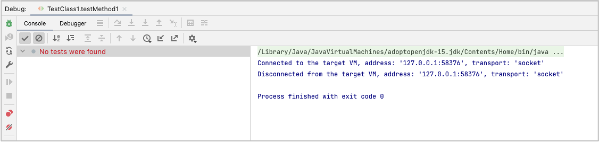
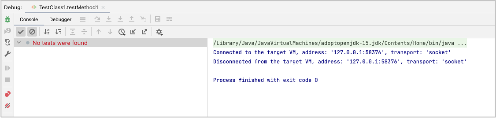

No tests were found
Symptom
No tests were found. You can not start any test.

Cause
JUnit 5 version specified is too old.
Solution
Try update JUnit 5 dependencies in build.gradle.

Do not forget to reload in Gradle pane.
No tests were found. You can not start any test.

JUnit 5 version specified is too old.
Try update JUnit 5 dependencies in build.gradle.
Do not forget to reload in Gradle pane.